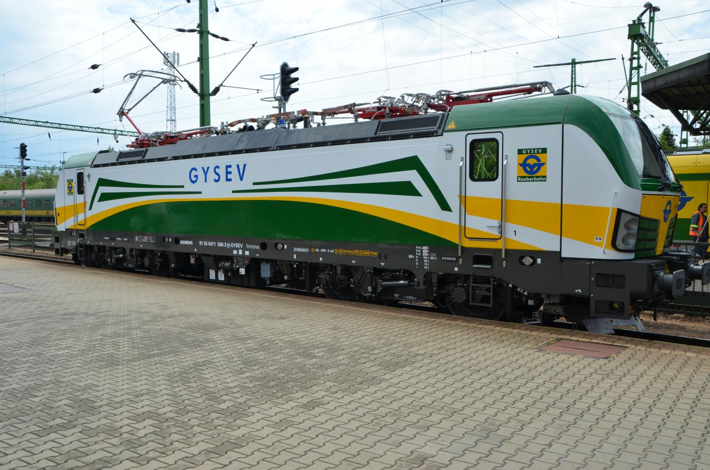

2017.05.23.
Megérkezett az elsõ két Siemens Vectron villamos mozdony a GYSEV Zrt.-hez. A vasúttársaság márciusban jelentette be, hogy 9 darab új vontató jármûvet rendel a Siemenstõl. A tervek szerint a gyártó még az idei évben leszállítja az összes, megrendelt Vectron-t. A jármûvek a hazai személyszállításban és a nemzetközi árufuvarozásban teljesítenek majd szolgálatot.
A GYSEV Zrt. és a Siemens képviselõi márciusban írták alá a beszerzési szerzõdést öt, ill. opcionálisan további négy villamos mozdony megrendelésérõl. Azóta biztossá vált, hogy a vasúttársaság él opciós jogával, így összesen kilenc Siemens Vectron villamos mozdonyból állhat a GYSEV flottája. A gyártó cég hónapokkal a leszállítási határidõ elõtt átadta az elsõ két Vectron MS mozdonyt a GYSEV számára. Az elsõ, új mozdonyt május 23-án, ünnepélyesen felavatták a soproni vasútállomáson.
"Hosszú ideje terveztük és gondos munkával készítettük elõ a vontató jármûparkunk fejlesztését. Véleményem szerint a lehetõ legjobb megoldást választottuk, hiszen kedvezõ feltételekkel vettünk fel hitelt, a rendelkezésünkre álló forrásból pedig az európai vasútvonalakon hosszú évek óta bizonyító Siemens Vectron mozdonyokat vásároltunk. Dinamikusan fejlõdõ vasúttársaságunknak nagy szüksége volt az új vontató jármûvekre. Külön öröm számomra, hogy várhatóan még az idei évben az összes mozdonyt leszállítja a Siemens" - mondta Kövesdi Szilárd, a GYSEV Zrt. vezérigazgatója.

VectornA vasúttársaság állományába kerülõ elsõ két mozdony háromáramnemû, így az európai vasútvonalak többségén képes közlekedni. Ezeken kívül még egy háromáramnemû, ill. hat darab kétáramnemû mozdonyt rendelt meg a GYSEV, utóbbiak közül kettõben dízel segédhajtás is rendelkezésre áll majd. A mozdonyokat elsõsorban a nemzetközi árufuvarozásban használja majd a társaság, de az új vontatójármûvek megjelennek a hazai InterCity-forgalomban is. Ennek megfelelõen a GYSEV Zrt. és a GYSEV CARGO Zrt. logóinak szín és formavilágát is megjeleníti az új, zöld sárga és fehér alapszínekre festett mozdonyok arculata.
"Nagy elismerés számunkra, hogy immáron 130 éve megbízható partner lehetünk az ország vasúti közlekedésének fejlesztésében. 1887-ben az elsõ villamos vontatású közúti vasutat, vagyis az elsõ budapesti villamost a Siemens hozta létre, ma pedig a GYSEV flottájának legújabb Vectron mozdonyát adhatjuk át. Vállalatunk újra bebizonyította, hogy kiemelkedõ teljesítményû vasúti jármûveivel méltán járul hozzá a hazai villamos hajtású vasúti közlekedés modernizációjához" - mondta el Dr. Ludvig László, a Siemens Zrt. Mobility divíziójának vezetõje.
Az elsõ két mozdony az 471 500-as és 471 501-es pályaszámot kapta. Jelenleg a jármûvek hatósági engedélyeztetési eljárása zajlik, a két új villamos mozdony várhatóan júniusban állhat forgalomba.
VISSZA